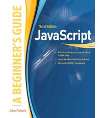
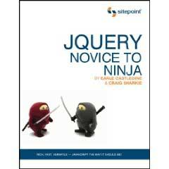

Welcome to Javascript! This class will open your mind about web design and programming - whether you are an experienced programmer or not.
This class is a blended class. While you enrolled in either online section 1371 or in-class section 1516 on Tuesday evenings, the class is essentially an online class, the Tuesday evening lecture/labs are optional - no attendance taken. The classes are broadcast live and archived for later viewing. While attendance is not required in the classroom regardless of which section you enrolled in, the material in the lectures is generally required material for the class.
This syllabus page is the primary hub for information about the class throughout the semester, so bookmark it now.
Check in to the CATE system now to access exams, gradebooks and the class forum.
There is NO REQUIRED SOFTWARE, although you will need a good code editor and a webserver account (an SRJC student account is fine, but you may also use your own domain or another host.) You will also need to use a current version of an HTML5 browser with a great element inspector (Chrome, FireFox, Opera or Internet Explorer 9+ will work.)
You may use the Computer Studies labs in Santa Rosa and Petaluma during regularly scheduled lab hours, or you may also work at your own computer. You MUST be self-sufficient with basic webserver fundamentals and be able to use FTP to deploy a website.
This class has no REQUIRED textbooks, but the curriculum is loosely based on these two books . There are many fantastic Javascript books, I highly recomment that you have at least one or two available as you take this class.
Javascript: A Beginner's Guide Third Edition
by John Pollock
Published by McGraw Hill.
ISBN 978-0-07-163295-9
JQuery Novice to Ninja
by Earle Castledine & Craig Sharkie
Published by Sitepoint
ISBN: 978-0-9805768-5-6
There are hundreds of books and online tutorials about Javascript and JQuery. Students should have at least one or two books for this class as supplemental reading, although it is not absolutely required.
Here are some other books that I recommend.
For web designers that are new to programming:
For programmers that are new to Javascript:
Other books that supplement the curriculum:
Jay Peretz is a part time Adjunct Faculty member in Computer Studies at Santa Rosa Junior College. Jay teaches web development classes in HTML, CSS, Javascript, Dreamweaver, Flash, PHP, SQL, XML and Actionscript.
Your final grade will be based on the following:
| Assignment | Number | Points |
|---|---|---|
| Projects | 8 | 60 |
| Quizzes | 5 | 20 |
| Midterm Exam | 10 | |
| Final Exam | 10 | |
| Total | 100 |
There will be five online quizzes throughout the course and an online midterm and final exam. The material comes from the class lectures and supplemental materials. If any exam is missed, a zero will be recorded as the score. It is your responsibility to take the online exams by the due date.
You must submit six complete projects throughout the semester.
There are twelve project tutorials assigned throughout the semester and your projects could be based on these examples or on others as pre-approved by the instructor. You are required to maintain a website to publish and document your projects. Your site can be hosted at your own private domain or at Santa Rosa Junior College, which offers students free web hosting services.
Projects are late if not submitted by Sunday at midnight following the class that the assignment is due. Late assignments can be submitted (or resubmitted with instructors consent) for 75% credit up to one week after the due date. Any assignments turned in more than one week late will receive no credit.
You may take this class credit/no-credit. You must decide before the fifth class and file the appropriate form with Admissions and Records. You must complete the midterm and final quizzes and projects to receive class credit.
If you decide to discontinue this course, it is your responsibility to officially drop it to avoid getting no refund (after 10% of course length), a W symbol (after 20%), or a grade (after 60%). Also, for several consecutive, unexplained absences, the instructor may drop a student.
| Date Class Begins: | 8/20/2012 |
| Date Class Ends: | 12/11/2012 |
| Last Day Add w/o add code: | 8/26/2012 |
| Last Day Add with add code: | 9/9/2012 |
| Last Day Drop for Refund: | 9/2/2012 |
| Last Day for P/NP option: | 9/30/2012 |
| Last Day Drop w/o W: | 9/9/2012 |
| Last Day Drop with W: | 11/18/2012 |
Calls or text messaging are not permitted in classroom or lab. See instructor if you have an emergency situation.
Students shall conduct themselves in a manner that reflects their awareness of common standards of decency and the rights of others. Interference with SRJC's educational objectives is a cause for disciplinary action. All members of the college community are expected to refrain from such interference, including the following types of conduct:
Here is a list of some basic guidelines for using the class forum or emailing directly to the instructor or a classmate:
Students with disabilities who believe they need accommodations in this class are encouraged to contact Disability Resources (527-4278), Analy Village - C, as soon as possible to better ensure such accommodations are implemented in a timely fashion.
This class is designed to build a solid set of skills using a variety of current techniques and resources. We start by exploring the fundamentals of programming using the Javascript language. We will relearn some techniques when we introduce the JQuery library and it's more intuitive syntax.
| Aug 21 | Introduction to Javascript | ||
| Aug 28 | Javascript Fundamentals | Project 1 | |
| Sep 4 | Events and Objects | Quiz 1 | |
| Sept 11 | Document and Window Objects | Project 2 | |
| Sept 18 | Working with Arrays Numbers and Dates | Quiz 2 | |
| Sept 25 | Handling Strings | Project 3 | |
| Oct 2 | Forms and AJAX | ||
| Oct 9 | Midterm | ||
| Oct 16 | JQuery Selection | Project 4 | |
| Oct 23 | JQuery Animation | Quiz 3 | |
| Oct 30 | JQuery Widgets | Project 5 | |
| Nov 6 | JQuery Forms and Dialogs | Quiz 4 | |
| Nov 13 | professional dev day | Project 6 | |
| Nov 20 | JQuery UI | ||
| Nov 27 | JQuery Mobile | Quiz 5 | |
| Dec 4 | Web data services | Project 7 | |
| Dec 11 | Javascript development | ||
| Dec 18 | Final Exam | Final Project | Final |